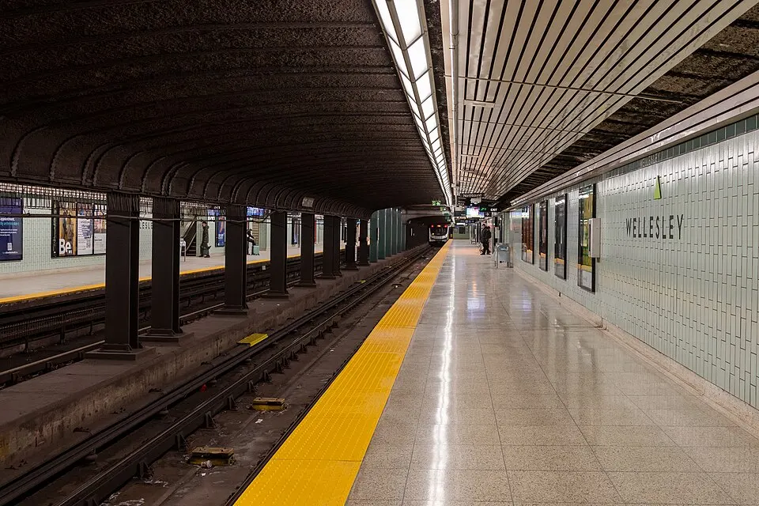

Signal
SignalStation atlas / Wellesley
Station history
Wellesley


Station history
Because the line ran east of Yonge Street, the TTC could put a bus terminal directly above the tracks. Passengers changed between buses and trains inside the paid area.
Elevators made the station accessible. A new entrance on Dundonald Street also gave riders a second way in from the neighbourhood.